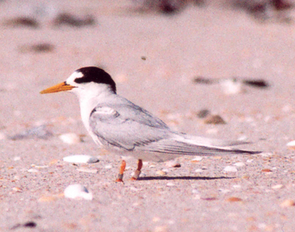

Sternula nereis
The small Fairy Tern is a small tern light grey upperparts and white underparts, with the rump and forked tail white as well. The wings have an web on the outer primary which are coloured dark grey. Adults breeding have yellow-orange bill and a black cap covering the crown and nape.